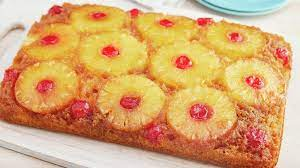

Pineapple Upsidedown Cake

An example picture of Pineapple Upsidedown Cake
Ingredients
- 1/4 cup butter
- 1 cup packed brown sugar
- 1 20 oz can pinapple sliced in juice, drained, juice reserved
- 1 6 oz jar maraschino cherries without stems, drained
- 1 15.25 oz box of yellow cake mix
- ingredients called for on cake mix box
Steps
- Heat oven to 350°F
- In 13x9-inch pan, melt butter in oven
- Sprinkle brown sugar evenly over butter
- Arrange pineapple slices on brown sugar
- Place cherry in center of each pinapple slice and arrange remaining cherries around slices; press gently into brown sugar
- Add enough water to pineapple juice to measure one cup.
- Make cake batter as directed on box, substituting pineapple jice mixture for the water
- Pour batter over pineapple and cherries
- Bake 42 to 48 minutes
- Immediately run knife around side of pan to loosen cake and place heatproof serving plate upside down onto pan.
- Turn plate and pan over and let sit for 5 minutes
- Remove pan
Home